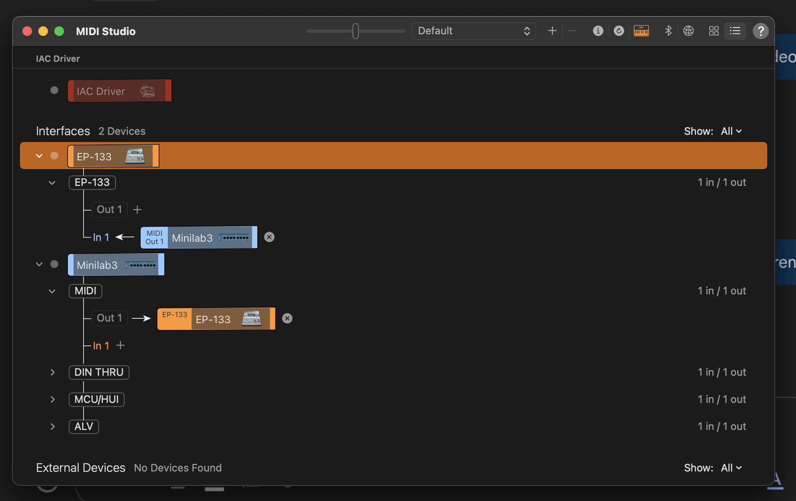
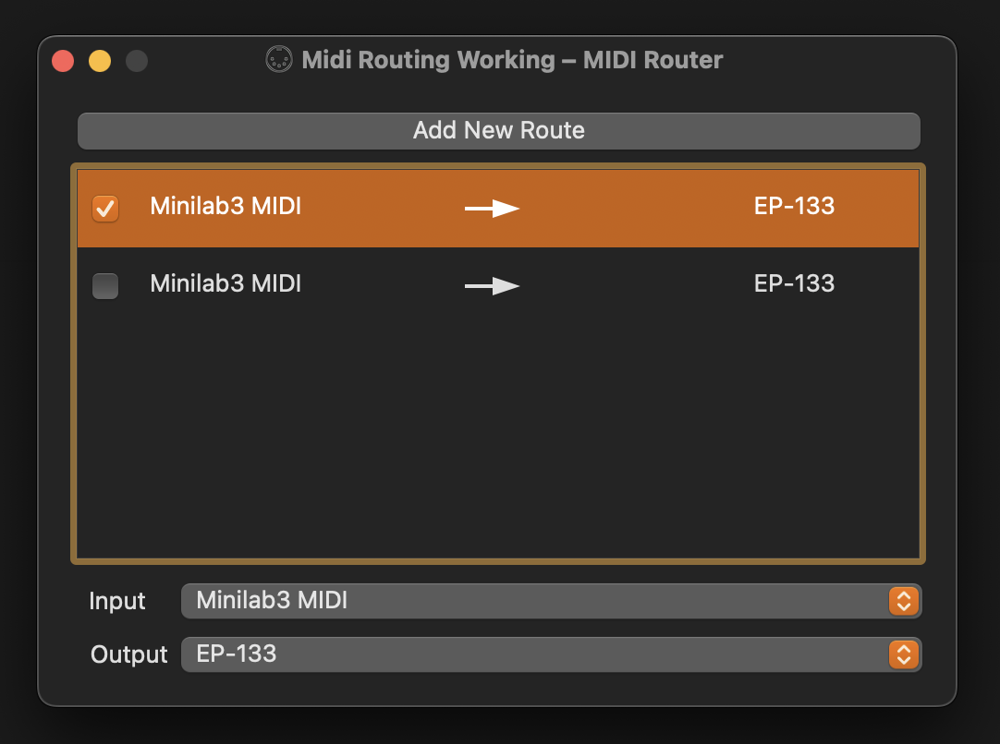

Mac OS X Sonoma midi router is broken.
Summary:
How to connect a USB midi keyboard (Minilab3) to a synthesizer (KO2) using a USB MIDI host.
Introduction
I believed there should be a method of connecting two digital musical instruments together via USB. This shouldn't be too much to ask. The Musical Instrument Digital Interface (MIDI) protocol allows computers, musical instruments and other hardware to be controlled/synced with other devices.
In the days of old, MIDI devices had their own DIN (ROUND) style plugs where you would connect the devices together. While industrial looking they required connecting to a computers "Sound Card" which may or may not have had a matching MIDI connection.
Everyone got mad with the permutations of connectors on these older systems, (MIDI Included), and USB was heralded as the next step forward in Serial Bus technology. A USB Midi standard happened, and that brings you to my recent two purchases:
ARTURIA Minilab 3
A compact MIDI controller known for its versatility and tactile feel, offering an array of pads, knobs, and keys for expressive performance.
KO2 Sampler Composer
A powerful sampler and composer, capable of transforming MIDI input into rich, textured soundscapes and melodies. Its the new kid on the block.
The ARTURIA has only ONE USB PORT, its USB-C and takes power over this port as well. Some people reccomend getting a powered "USB HUB", I happened to have a usb hub, and it didnt seem to work.
The next option that I had was to use a real computer as a host. I had a friend reccomend using a "Mac laptop" as the "USB MIDI host" which would route the MIDI data when configured. He stated "The musicians all use macs! it must work well, otherwise they wouldnt use it."
Fortunately, I had access to one a mac running Sonoma (10.14.1). I plugged both of these devices into the laptop and tried to see if it would automatically route data between the two.
It did not. I could however see in "Garage Band" that multiple new midi device was available. When pressing the keys on the keyboard (and with a bit of configuration on the KO2, I was able to see midi events flow from each device to the host.
Apple suggests using the MIDI STUDIO built into OSX to be able to route midi events. I dont know if this ever worked, but its not working for me.
I systematically tried every possible permutation of devices being connected, disabled, enabled, restarted and rebooted just to make sure there wasn't anything odd.
Below is an example of the routing that I had expected to work (IT DOES NOT).

Figure 1: Broken midi studio in osx.
Are my expections insane, other people apparently have done this ? Apple apparently believe that its possible (Although I reckon they've somehow fucked this up).
I began to question my sanity, there were many people online who believe this work. Surely this has not slipped thorugh the cracks of Quality Assurance of one of the more profitable software companies in the world. However I assure you that it appears that it does.
What to do ?
I was told that there was some software that may help. It was spoken about in hushed tones. The software was named "MIDI PATCHBAY", Which sounds like exactly what I needed. I had an internal visualization of an ethernet switch patch bay routing things, this sounded good.
So, I hit up "brew", big miss.
I visited github, and found midi patch bay by notahat, no updates for 5 years. I tried one of the releases and Mac OS complained that the binary was damaged (Narrator: it wasn't)
Another programmer forked this and made some minor improvements. This has no "github releases" so there is no downloadable pre-built packages.
Fortunately, I looked at the social network of this fork and found that yet another hacker has picked it up and forked it as MIDI router. This is where the gold is. It even has a "release" on gitlab, THANK YOU yaros-eu.
I fired up the app with low expectations, Mac OSX midi studio has beaten that out of me. It is a tiny app weighing in at 143,897 bytes unpacked, natively built for Apple Silicon.
It was simple, elegant and most importantly.. it worked.
You can add a route with the button named "Add New Route". Check out this beautiful app.

Figure 2: Working application to route midi.
Click either of the "Input" or "Output" drop downs and it will present the current devices on the midi bus. Tick the route to enable, untick it to disable.
It is possible to route multiple devices to a single output. Now when I press keys on the Minilab3 the midi events are sent through to the KO2 and it works.
Conclusion
Apple OSX midi configuration software is likely broken, I found "Midi router" that seems to route midi messages. It works great.